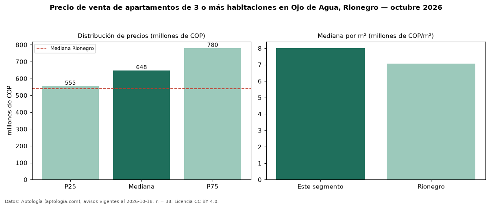

Precio de venta de apartamentos de 3 o más habitaciones en Ojo de Agua, Rionegro — octubre 2026
En Ojo de Agua, Rionegro, la mediana de precio de venta de apartamentos de 3 o más habitaciones es COP 648 millones, según 38 avisos vigentes. Eso es 20 % por encima de la mediana de Rionegro para apartamentos de 3 o más habitaciones (COP 540 millones). Por metro cuadrado, la mediana es COP 8,01 millones/m² (n = 38 avisos con área), 13 % por encima de Rionegro (COP 7,06 millones/m²). Son 61 % de los 62 avisos de apartamentos en venta de la zona, cuya mediana general es COP 588 millones (+10 %). Con el precio por m² de arriendo del mismo segmento (COP 36.041/m² al mes), la rentabilidad bruta implícita es 5,4 % anual (aproximación con medianas de ofertas distintas). El área mediana anunciada es 77 m². El estrato más frecuente es 5 (68 % de los avisos con estrato). 95 % de los avisos con el dato declara parqueadero o cochera. Datos: Aptología (aptologia.com), CC BY 4.0 — https://www.aptologia.com/venta/rionegro/ojo-de-agua. Archivos: PDF, CSV con las cifras y gráfica PNG.

| Avisos únicos | 38 |
|---|---|
| Percentil 25 | COP 555.000.000 |
| Mediana | COP 647.500.000 |
| Percentil 75 | COP 780.000.000 |
| Mediana por m² | COP 8.006.944 |
Fuente: avisos vigentes de portales inmobiliarios recopilados por Aptología, deduplicados (mínimo 30 avisos únicos por celda). Precios pedidos, no cerrados. Fecha: 2026-10-18.